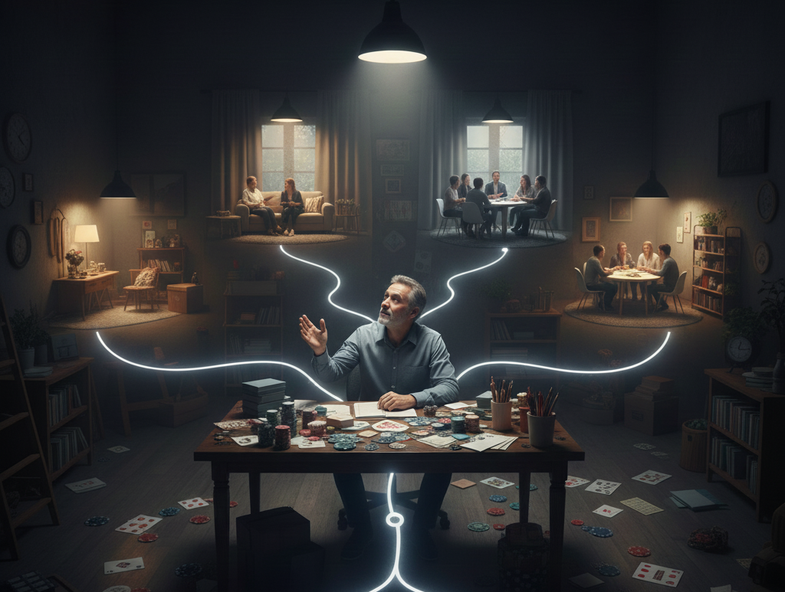

İyileşme süreci doğrusal bir yol değil, bir sabır yolculuğudur. İlk adım durumu kabul etmek ve profesyonel bir destek ağı oluşturmaktır.
YEDAM (115) Danışma Hattı ile ücretsiz ve anonim psikolojik destek alınabilir.
Gamban ve BetBlocker gibi yazılımlar, zararlı sitelere erişimi engeller.
Para kontrolünün sınırlandırılması, dürtüsel davranışları azaltır.

Sağlıklı hobiler ve üretken aktiviteler, bağımlılık döngüsünü kırar.
15 Dakika Kuralı, dürtülerin azalmasına yardımcı olur.
Her küçük adım, daha sağlıklı ve özgür bir geleceğe yaklaştırır.